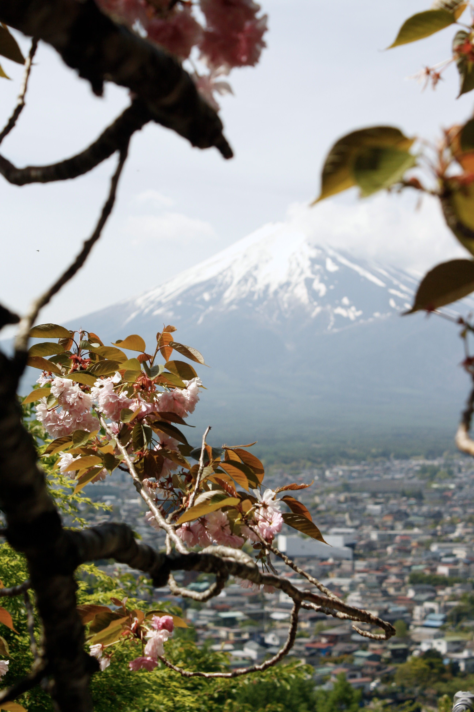
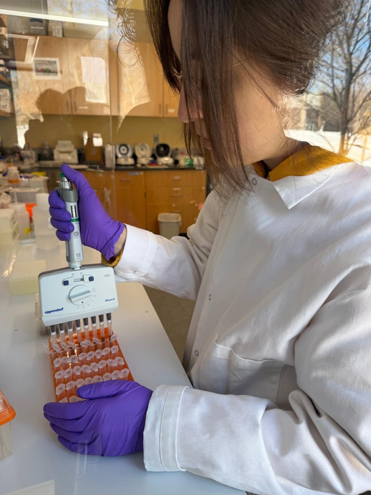
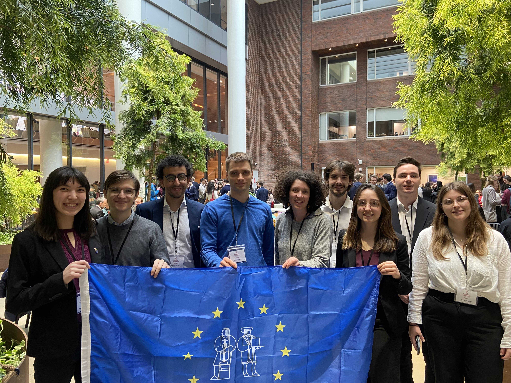
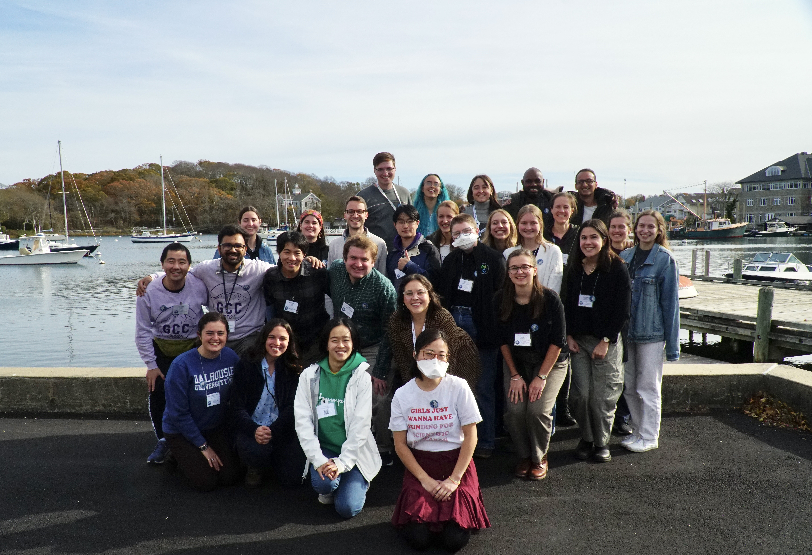

Japan
Get to know the country of the rising sun from a local perspective.
Explore research projects from protein biochemistry, proteomics of secreted microbial proteins, to field observations and modeling.

As a first generation low income student I strive to make science more accessible for everyone.

I enjoy exploring new places and capturing places I live in and connect with. I strive to minimize air travel and connect traveling for work with traveling for fun. Number one supporter of exploring by walking, biking, or using public transportation. Learn more about my photography projects here.

Get to know the country of the rising sun from a local perspective.

From North to South, East to West - come join me in my home country!

The ocean is calling!

Follow me to the hidden gems of Boston, MA

Ocean, Mountains, and more in the Eastern United States.

Read about my passion for the Korean Martial Art.
Click here to find my CV.

You can find an overview of my science policy journey here.

Find details on my outreach and community work.